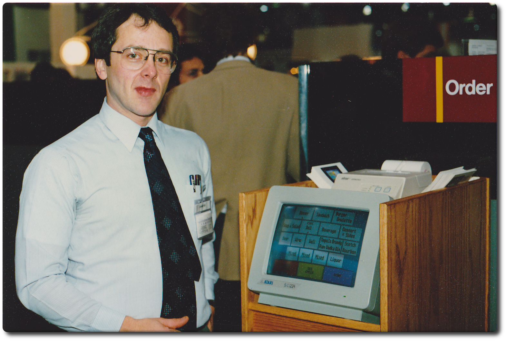

ViewTouch
The first commercial touchscreen point-of-sale — finger-on-glass order entry on an Atari ST

Overview
ViewTouch is the first commercially deployed graphical touchscreen point-of-sale system. In 1986 restaurateur Gene Mosher bought an Atari ST computer and a MicroTouch capacitive touchscreen overlay for his Old Canal Cafe in Syracuse, New York, and wrote POS software that let waitstaff take orders by touching on-screen buttons — menu categories, items, modifiers, and table maps — replacing the paper ticket and the keypad electronic cash register. The hardware was a retail machine rather than a home computer: an Atari 520ST/1040ST (Motorola 68000) driving a 12-inch Atari SC1224 color CRT fitted with the MicroTouch overlay, mounted in a custom wooden enclosure with a Star Micronics DP8340 printer on top. Mosher had written his first POS software for the Apple II in 1978, having bought Apple II serial #753 from the company's first manufacturing run.
The interaction is pure direct manipulation: staff press fingertip zones directly on the capacitive overlay with no keyboard and no stylus — the screen IS the register, and an order is a handful of finger taps. The widget engine Mosher wrote for it is an unusually early direct-manipulation application framework. A photograph taken by Barbara Mosher at the Atari booth at Comdex, Las Vegas, on 17 November 1986 shows Mosher with a running ViewTouch system and is the exhibit's primary image. ViewTouch went on to be used in restaurants and bars and survives today as an open-source Linux/Raspberry Pi hospitality platform under the GNU GPL — the continuation of a single business owner's hand-built touchscreen register.
Deep dive
ViewTouch is a missing link in the story of touchscreen HCI. Where most early touch machines were kiosks, lab instruments, or desktop computers (HP-150, Buick Riviera dashboard, Tektronix 7854), ViewTouch put a touchscreen in the hands of production service staff to drive a live business in real time — order entry, modifiers, table mapping, and kitchen printing. It is the direct ancestor of the modern restaurant POS and of tablet-based ordering, which it prefigures by two decades.
The system embodies the one-woman-or-man shop of early software: Mosher wrote the software, specced the hardware (Atari ST + MicroTouch overlay + Star printer), and deployed it from his own cafe. He had been writing POS software since 1978, so ViewTouch was a decade of personal craft culminating in the first commercial graphical touchscreen register.
The museum has several touchscreen exhibits (HP-150 Touchscreen desktop computer as the most obvious parallel), but none is a point-of-sale terminal, and none is operated by a worker to run a live business. ViewTouch is the museum's only retail/hospitality POS artifact and the only touchscreen whose user is a professional cashier rather than a general desktop user.